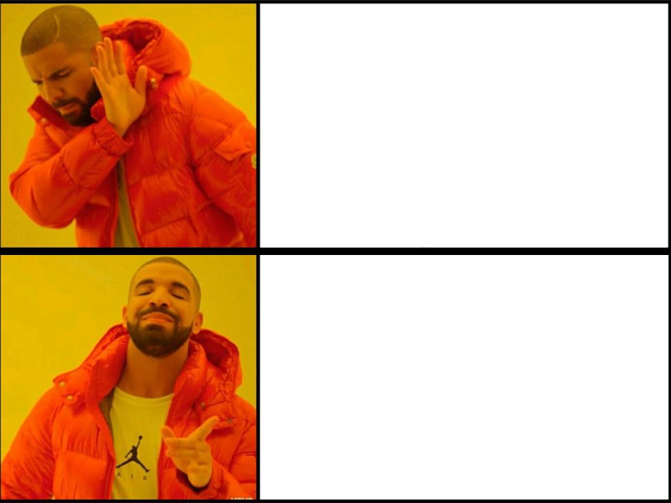

Aranzazu & Richard
CLI-Agenda
Presentación de decisiones de arquitectura y diseño y metodología de trabajo en el desarrollo del gestor de tareas, notas y eventos.
Usa las flechas del teclado ← → o Espacio para avanzar
Cómo nos organizamos en pareja
Desarrollo colaborativo en ramas independientes sin bloqueos entre presentación (CLI) y persistencia.
División sin bloqueos
Un integrante desarrolló el Dominio, Servicios y menús CLI utilizando repositorios en memoria (InRam). Paralelamente, la otra compañera implementó la infraestructura MySQL, esquemas SQL y DAOs.
Flujo Git riguroso
Ramas temáticas (feature/events, chore/docker), rebase diario sobre la rama común dev y Pull Requests revisadas antes de fusionar. Historial limpio y trazable.
Criterios de Aceptación
Definición de User Stories con criterios de aceptación claros en markdown antes de implementar código o escribir tests unitarios (TDD).
Value Objects frente a tipos primitivos
Problema detectado
Primitive Obsession: Usar String o LocalDate planos provocaba validaciones de nulos, vacíos y fechas pasadas duplicadas y dispersas entre la CLI y los servicios.
Solución adoptada
Modelar conceptos de negocio como Java record inmutables: TaskTitle, TaskDueDate, EventCelebDate, NoteContent. Si la instancia existe, es matemáticamente válida.
• Auto-validación: Se valida en el constructor/factoría estática.
• Protección temporal: EventCelebDate rechaza años anteriores al 2000, evitando errores de tipeo como 0026 o 1926.
public record TaskTitle(String title) {
// Compact constructor: validación canónica de record
public TaskTitle {
if (title == null || title.isBlank()) {
throw new InvalidTaskException(
"Task title cannot be empty or blank"
);
}
title = title.trim();
}
public static TaskTitle of(String title) {
return new TaskTitle(title);
}
}Look, but don’t touch... 📸
La CLI no entra en la cocina del Dominio. Solo mira la foto de la carta.
Barrera de DTOs entre Servicio y CLI
Desacoplamiento de capas
La interfaz de usuario por consola nunca recibe ni modifica entidades de dominio directamente. Todo el intercambio se realiza mediante Data Transfer Objects inmutables (TaskDto, EventDto).
Beneficios directos
- ✓ Inmutabilidad: La CLI no puede corromper el estado de una entidad accidentalmente mediante setters.
- ✓ Independencia tecnológica: Si mañana se sustituye la CLI por una API REST o Web, el dominio no cambia una sola línea.
public record EventDto(
UUID id,
String title,
LocalDate celebDate,
EventRecurrenceType eventRecurrenceType,
LocalDate createdAt,
List<UUID> taskIds
) {}
id = 1, 2, 3... ❌
3fa85f64-5717... ✨
Identidad con UUID y método factoría restore()
Identidad generada en Java
No se usan enteros autoincrementales de MySQL. Las entidades nacen completas con su UUID antes de tocar la base de datos, lo que permite que el modelo funcione igual en memoria que en MySQL.
Por qué necesitamos create() vs restore()
Reconstitución: Al leer desde MySQL no se debe regenerar el UUID ni la fecha de creación. Además, restore() permite cargar tareas históricas vencidas sin que salte la validación de fecha pasada.
// 1. Creación de una NUEVA tarea
public static Task create(TaskTitle title, Priority prio) {
return new Task(
UUID.randomUUID(), title, prio,
false, null, LocalDateTime.now()
);
}
// 2. Reconstitución desde MySQL sin alterar datos
public static Task restore(UUID id, TaskTitle title, ...) {
return new Task(id, title, ...);
}Sobreingeniería vs Necesidad
Hilos asíncronos rompen el Scanner(System.in) mientras el usuario escribe.
Si la CLI es quien sabe cuándo necesita los eventos, una llamada directa (pull) es 100% predecible, monohilo y limpia.
Descarte formal del Patrón Observer
Por qué se descartó Observer
- 1. Incompatible con CLI síncrona: Un hilo emitiendo notificaciones asíncronas corrompería la consola mientras el usuario introduce datos en el
Scanner. - 2. Efecto "Pull disfrazado de Push": La vista (CLI) le pedía al servicio que notificara a la propia vista.
- 3. Consumidor único: No existen múltiples suscriptores heterogéneos.
Solución adoptada
Consulta directa mediante listUpcomingEvents(daysAhead) con cálculo automático de recurrencias en tiempo real (DAILY, WEEKLY, MONTHLY, YEARLY).
Arquitectura Plug & Play: ¿Por qué NO borrar InRam? 🔌
Interfaz Repository y conservación de InRam
Desacoplamiento total de Persistencia
Los servicios solo conocen la interfaz TaskRepository. El paso de trabajar en memoria a MySQL con DAOTaskRepository requirió cero cambios en los servicios o en la CLI.
Por qué NO eliminamos los repositorios InRam
Al conectar MySQL, las clases InRam*Repository no se borraron. Se conservan como base para una futura capa de caché L1 en memoria y para ejecutar suites de tests ultrarrápidas sin levantar Docker.
Contrato de Repositorio
Map<UUID, Task>
Tests & Caché
MySQL JDBC
Persistencia real
La Cadena de Montaje en AppInitializer ⚙️
new dispersos por el código.
Ensamblaje centralizado con AppInitializer
Inyección centralizada
Se aisló todo el cableado en AppInitializer. Cada capa recibe sus colaboradoras por constructor, evitando dispersar 13 operadores new y dependencias cruzadas por el resto del proyecto.
public static void main(String[] args) {
try {
MainMenuCli mainMenu = AppInitializer.init();
mainMenu.showMenu();
} catch (DatabaseException error) {
System.out.println(error.getMessage());
} finally {
ConnectionFactory.closeConnection();
}
}
Main no sabe construir objetos: solo arranca y cierra recursos de forma segura.
public static MainMenuCli init() {
// 1. Capa de Datos (DAOs)
TaskDAO taskDao = new TaskDAOAdapter();
NoteDAO noteDao = new NoteDAOAdapter();
EventDAO eventDao = new EventDAOAdapter();
// 2. Capa de Dominio (Repositorios desacoplados)
TaskRepository taskRepository = new DAOTaskRepository(taskDao);
NoteRepository noteRepository = new DAONoteRepository(noteDao);
EventRepository eventRepository = new DAOEventRepository(eventDao);
// 3. Capa de Negocio (Dependencias cruzadas inyectadas)
TaskService taskService = new TaskService(taskRepository);
NoteService noteService = new NoteService(noteRepository, taskRepository);
EventService eventService = new EventService(eventRepository, taskRepository);
// 4. Capa de Presentación (CLI de consola)
TaskCli taskCli = new TaskCli(taskService);
NoteCli noteCli = new NoteCli(noteService, taskService);
EventCli eventCli = new EventCli(eventService, taskService);
// 5. Menú Principal orquestado
return new MainMenuCli(taskCli, noteCli, eventCli);
}¿Conexión efímera o Túnel persistente? ⚡
Negociar socket y credenciales en cada operación genera latencia innecesaria y satura descriptores del sistema.
La conexión se abre una sola vez al inicio y se reutiliza. isValid(2) reconecta si MySQL se reinicia.
Patrón Singleton en ConnectionFactory
Conexión física compartida
La CLI es una aplicación monousuario y monohilo. Abrir y cerrar una conexión TCP/TLS en cada SELECT o INSERT añadiría una latencia apreciable. Se gestiona una única conexión persistente.
Resiliencia y Cierre Limpio
- • Auto-reconexión: Si MySQL reinicia,
isValid(2)detecta la desconexión y reconecta de forma transparente. - • Cero conexiones huérfanas:
Main.javaasegura la invocación decloseConnection()al salir de la terminal.
public class ConnectionFactory {
private static Connection sharedConnection;
// Constructor privado: impide instanciación externa
private ConnectionFactory() {}
public static synchronized Connection getConnection() {
if (sharedConnection == null
|| sharedConnection.isClosed()
|| !sharedConnection.isValid(2)) {
sharedConnection = openConnection();
}
return sharedConnection;
}
}Ejecución dual y Docker Multi-stage
Opción A: Híbrida (IDE)
MySQL en Docker + App en IntelliJ con breakpoints. Permite depuración paso a paso instantánea sin reconstruir imágenes.
Opción B: 100% Docker
Evaluación sin instalar Java ni Maven en el equipo anfitrión. Con perfil profiles: ["app"] para no congelar la CLI.
Multi-stage Build
Etapa 1 (Maven 3.9 + JDK 25) compila; Etapa 2 (JRE 25 ligero) ejecuta. La imagen final pesa una fracción y no lleva fuentes.
mysql-data: down conserva los datos; down -v purga el volumen para testing limpio.
docker compose down -v
Demostración en Vivo
Lanzamos la agenda interactiva en un solo comando gracias al alias configurado.
docker compose up -d && docker compose run --rm app